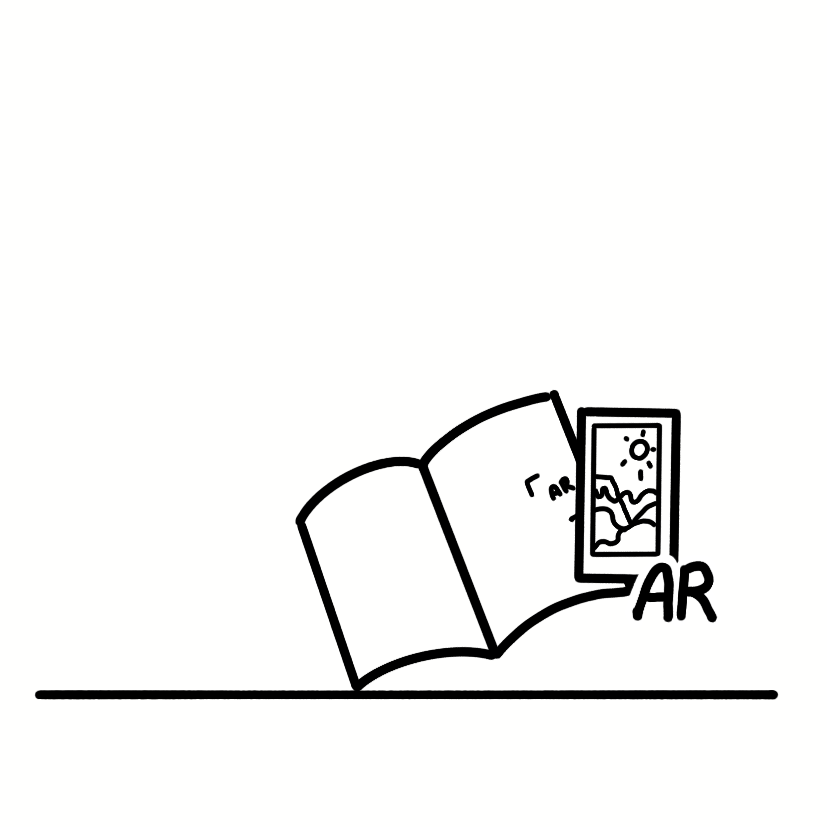
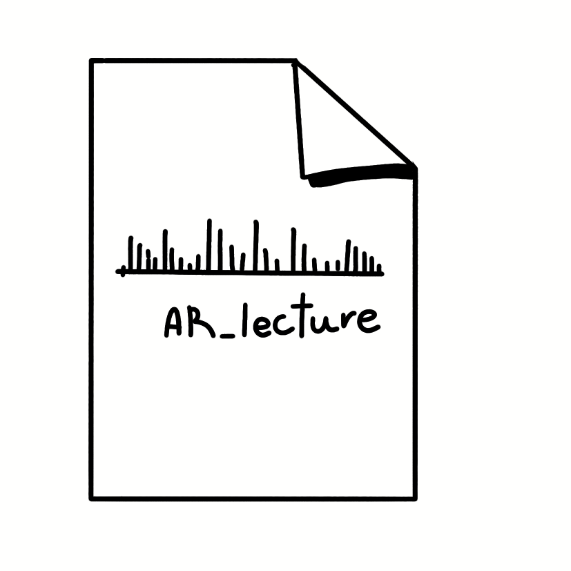
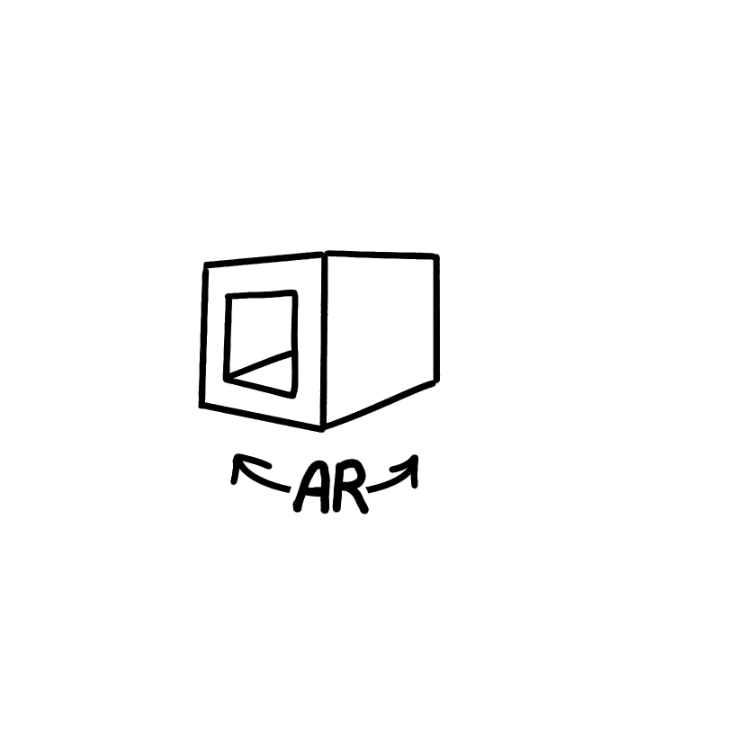
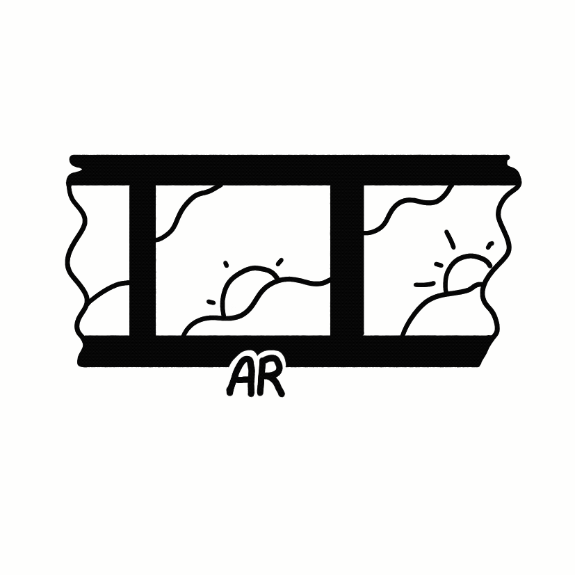

Наведите камеру на метку в книге
Прочитать новую метку
Инструкция
Как пользоваться
Откройте книгу на странице с меткой AR
Наведите камеру так, чтобы метка попала в кадр
Дождитесь появления дополнительного контента
Чтобы отсканировать другую метку — нажмите кнопку внизу
Понятно



